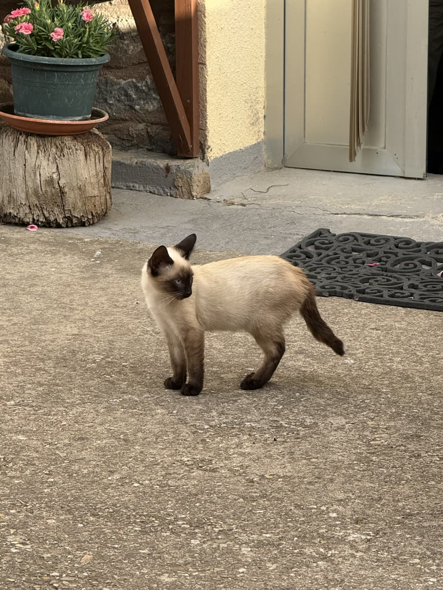
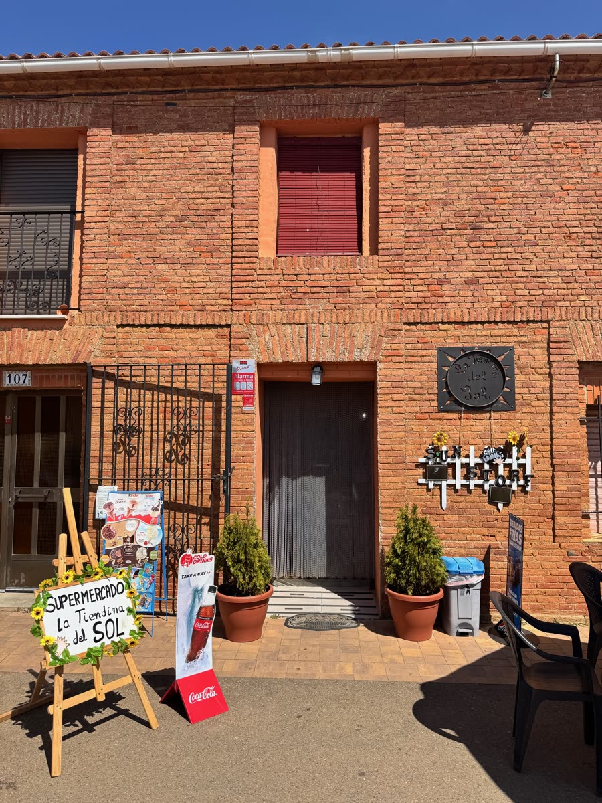
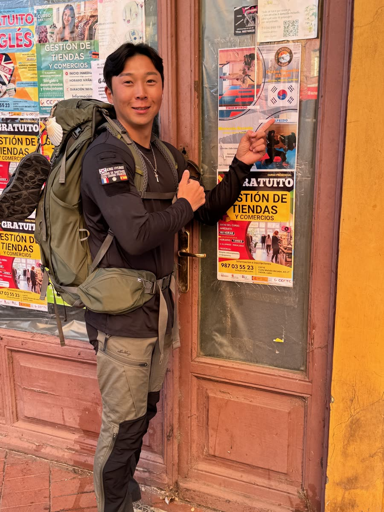
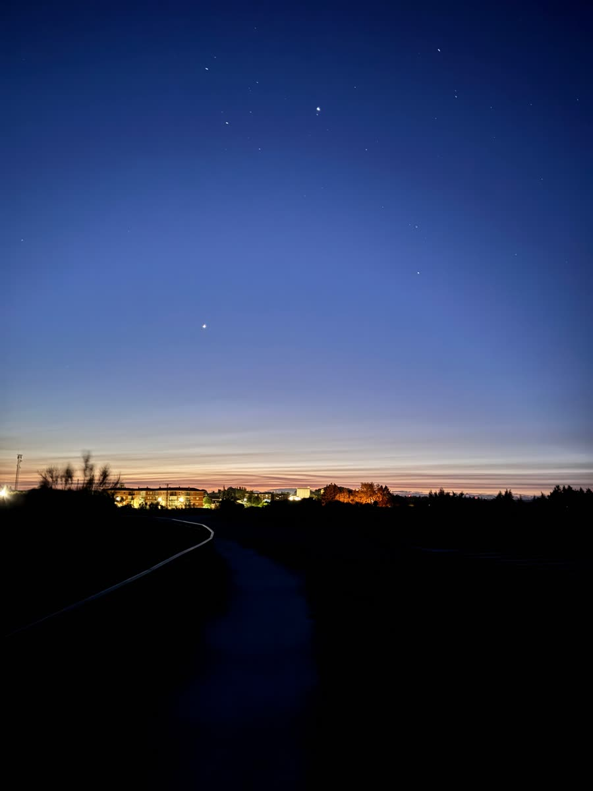
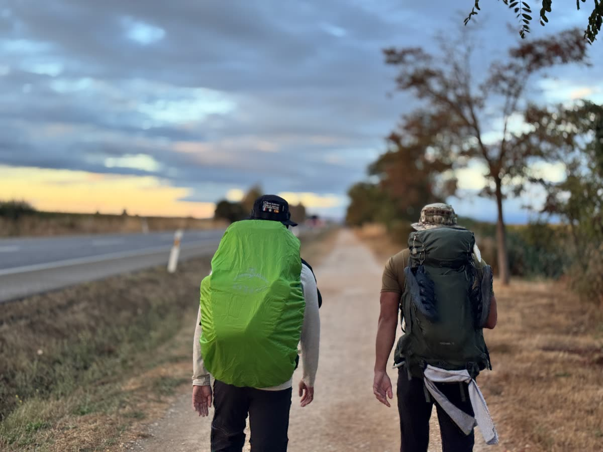

순례자의 한끼한밤
순례자의 한끼한밤
순례길의 하루는
늘 같은 순서로 끝난다.
걷고, 씻고, 빨고, 먹고, 잔다.
알베르게는 순례자들이 묵는 숙소다. 큰 방에 이층침대가 쭉 놓여 있고, 처음 보는 사람이 위층에서 자고 내가 아래층에서 잔다. 처음엔 그게 그렇게 어색하더니, 며칠 지나니까 침대에 배낭 내려놓는 순간 그냥 집 같았다. 하루 6만 원 남짓으로 32일을 버텼으니 대단한 침대를 바란 적도 없다. 누울 데 있고 샤워기에서 따뜻한 물만 나오면 그날은 성공이었다.
열이틀째에 도착한 아헤스는 사실 좀 서러운 날이었다. 며칠 전 벌에 쏘인 발목이 퉁퉁 부어서, 산 하나를 넘는 내내 절뚝거렸다. 그런데 알베르게 마당에 들어서니 샴고양이 한 마리가 문 앞에 앉아서 나를 쳐다보고 있었다. 나는 발목 붙잡고 끙끙대는데, 고양이는 세상 태평했다. 이상하게 그게 위로가 됐다. 그날 34일 일정을 32일로 줄이기로 마음먹었는데, 고양이 앞에서 내린 결정치고는 꽤 큰 결정이었다.

도착하면 제일 먼저 하는 일은 빨래다. 그날 입은 옷을 손으로 비벼 빨아서 마당 빨랫줄에 넌다. 옷이 몇 벌 없으니 오늘 안 마르면 내일 젖은 옷을 입어야 한다. 그래서 순례자들은 빨래 마르는 데 진심이다. 메세타 한가운데 엘 부르고 라네로에서는 바람이 어찌나 세게 불던지, 샤워하고 나왔더니 빨래가 벌써 다 말라 있었다. 메세타는 걷기엔 지루해도 빨래 말리기엔 최고였다. 그날 저녁엔 마켓에서 찾은 신라면과 김치까지 먹었으니, 완벽한 날이었다.

알베르게마다 분위기도 다 다르다. 까리온에서 묵은 곳은 안뜰에 농구 골대가 있어서, 하루 종일 걸어 놓고 또 공을 던지며 놀았다. 다리가 아픈 건 아픈 거고 노는 건 노는 거다. 그날은 동행들과 직접 장을 봐서 저녁을 해 먹었다.
물론 매번 순조롭지는 않았다. 열아흐레째, 만시야 데 라스 물라스에서는 잔뜩 지쳐서 알베르게에 도착했는데 문이 잠겨 있었다. 문 앞에 서서 한참 당황했다. 어떻게든 들어가긴 했는데, 알고 보니 그날 마을에 축제가 있었다. 전통 옷을 입은 사람들이 말을 타고 거리를 지나가고 있었다. 문이 잠겨서 놀랐다가 축제를 보고 또 놀란, 정신없는 하루였다.
스물하루째에는 평소보다 조금 비싼 알베르게에 묵었다. 침대도 편하고 시설도 깨끗했다. 그날 일기에 적은 말은 딱 한 줄이었다. "역시 돈이 좋네." 순례자도 사람이다.

그리고 알베르게의 하루는 생각보다 일찍 끝나고, 또 일찍 시작된다. 알베르게는 대부분 밤 10시쯤 불이 꺼지고, 새벽엔 누군가 부스럭거리며 짐 싸는 소리에 눈을 뜬다. 해 뜨기 전에 나가야 낮 더위를 피할 수 있어서다. 랜턴을 켜고 깜깜한 길로 나서는 날이 많았다. 스물이틀째 새벽엔 비까지 내려서, 배낭에 레인커버를 씌우고 우의를 입고 걸었다. 앞서 걷는 동행의 초록색 배낭 커버만 보고 따라갔다.


폰세바돈 산꼭대기 알베르게에서는 10인실의 절반이 한국인이었다. 비바람을 뚫고 올라와서 라면 한 그릇 먹고, 와인 한 잔씩 나누고, 다 같이 곯아떨어졌다. 그날 밤은 1편에서 이야기했으니 여기서는 이 정도만.
32일 동안 침대가 몇 번 바뀌었는지는 세어 보지 않았다. 다만 이건 확실하다. 어디서 잤는지는 잘 기억 안 나도, 누구랑 같이 있었는지는 다 기억난다. 좋은 잠자리는 결국 좋은 침대가 아니라, 같은 방에서 "Buen Camino" 하고 인사하던 사람들이었다.
언젠가 포르투에서 내가 내어줄 침대도 그랬으면 좋겠다. 비싸지 않아도, 문 앞에서 당황하지 않게. 문 열어 두고 기다리겠다.
🇬🇧 For pilgrims passing by
Every day on the Camino ends the same way: walk, shower, wash your clothes, eat, sleep. I spent 32 nights in albergues across the Camino Francés. A calm Siamese cat greeted me the day my ankle was swollen from a bee sting. The Meseta wind dried my laundry before I finished my shower. One albergue door was locked when I arrived, on the day of a village festival. I don't remember every bed, but I remember everyone who said "Buen Camino" in those rooms.
🥾 순례길 32일 연재
- 1편 · 오늘 저녁은 뭘 먹지?
- 2편 · 오늘은 어디서 자지? (지금 읽는 글)
- 3편 · 피레네를 하루 만에 넘은 날
- 4편 · 밀밭에 20분 누워 있던 날
- 5편 · 산티아고, 그리고 땅끝 피스테라 (준비 중)
- 6편 · 순례길 준비는 이렇게 했다
🕯️ 오늘 밤 이야기는 여기까지.
다음 편은 피레네 산맥을 하루 만에 넘은 날의 이야기입니다.